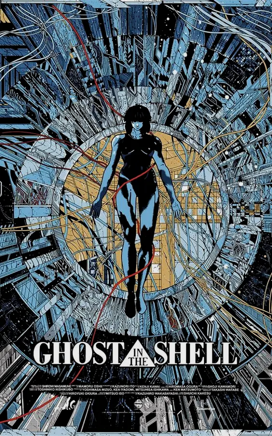

文献积累——学术生涯的外部记忆
在科研之路上，你想要积累哪些知识？
有没有过这样的经历？你正在准备一个重要的研究报告或论文，需要找到那篇关键的文献，但却在堆积如山的文件和资料中找不到它。或者你读过一篇很好的文献，但当你想引用它的时候，你却忘记了它的具体内容。
在一些科幻作品中，存在“外部记忆装置”的设定，其中的人物往往不将全部信息记在脑中，而是在需要时从外部记忆中调取内容。如今我们的现实已经与之颇有些相似：我们不会记住每一个具体的知识细节，浩如烟海的内容爆炸也不允许我们这么做，但我们通常知道去哪里找到这部分知识。当下，电脑和手机已经成为我们肢体的延伸，搜索引擎强大的检索功能，赋予我们按照需求取用知识的能力。

而在科研道路上，经年累月的学习不但锻炼着我们的实验技能，积累下来的知识同样是我们学习道路上宝贵的财富。在此过程中，我们读过的每一篇文献，被我们记住的不是其中具体的语句，而是各项工作中的主要结果和结论。但在有些时候，比方说想参考某个方法做个相似的实验，或是写作背景综述时，我们会回忆起曾经看过的文章，会去找出最原始的文章查看更多细节。这时，曾经整理过的文献便摇身一变，担当起我们学术生涯外部记忆的职责。

为什么文献常常乱作一团？
那么，为什么明明每一篇文献都有明确的主题和关键词，整理起来却依旧存在非常多困难呢？举个例子，说有一篇文章，“如何做出一盘无敌好吃的小炒肉”，里面从肉的选购、处理、调味到烹饪方法一应俱全。你看完后，觉得非常好，这么棒的技巧我一定要学会，你会把它收在哪？
- 菜谱 —— 没错，再怎么说这也是个菜谱，放这准没错
- 年夜饭菜单 —— 今年的年夜饭由你掌勺，正巧家里有人最爱吃小炒肉，放这备着
- 如何买菜 —— 本文的肉类选购部分讲得太清晰了，常常温习准能以后买菜不踩坑
- 常用调味料 —— 刚搬了新家，需要买些调料，你正在想买什么合适
- ……
如果从上面几点出发，这些归类方式似乎都有各自的道理，这也是信息管理有时会比较困难的原因：在不同的场景下，相同的内容可以有不同的分类方式，并且往往没有对错之分。
因此我觉得，好的文献管理思路比工具更重要。现在能用来做文献管理的工具层出不穷，Endnote也好，Zotero也好，网上都能找到非常详细的用法教程。但是假如只有工具，没有恰当的内容组织思路，那工具里的文献也会堆成一团乱麻。我更想提供一个框架，让每个人可以根据自己的需要，将内容以一种便于寻找的方式组织起来。
我们的目的：让内容便于被找到。
什么是PARA方法？
在之前的很长时间里，我一直隐约觉得，自己整理的文献资料库，其中的各个文件夹彼此之间没有明确的分隔关系，以至于想存一篇新文章的时候，要纠结半天放在哪。纠结完存进去后，要找来用的时候又找不出来这篇文章了。后来偶然间了解到了一种称为PARA的信息整理方法，它将内容分类为项目、领域与资源几个大类。或许它不是最好最完美的，但是相比于没有框架的时候，已经有了质的飞跃。也因此，我今天将其分享给大家，如果你们也遇到过相似的困扰，可以尝试一下这个方法。
所谓PARA，其实是Tiago Forte提出的一种组织信息的思路。其实，PARA分别代表Projects（项目）、Areas（领域）、Resources（资源）和Archives（归档）。

这样讲可能比较抽象，举个我自己的例子，比如我关注基因组学和生物信息学，我所做的课题也与之有关，相关分析做得好可以帮助我产出成果，做不好则毕业都很费劲，我需要为此负责，因此基因组学就可称作我关注的一个领域。同时，我的课题是一个物种的基因组测序项目，从我开始着手找资料开始，历经测序、组装和分析，直到文章发表结束，因为能划分出非常明确的开始和结束时间，因此这个课题属于一个项目。同时，我又对平面设计比较感兴趣，会去看一些相关的书籍和学习资料，这些东西我看着会觉得很有意思，但如果不看也不太影响我完成课题，于是可以算作资源。另外，假如我之前有个项目已经做完了，已经完成项目的内容我当然不需要经常去关注，那它就可以被划到归档。

然而，领域与项目、资源之间并不是独立的，而是可以互相滋养
通过项目来打磨提升领域——比方说，我关注基因组学，但是只靠看一堆基因组相关的文章提升实在有限，必须要自己去实际做一些项目来锻炼，在项目中熟悉各部分的流程，并实际掌握操作的技能。
通过资源支撑领域域 ——我们日常看的各种文章、资料，大部分都属于资源而非领域，正如上面讲到，我们没法只靠读来掌握某些内容。但是每天的精力是有限的，假如分配给太多方面，面面俱到也很困难。于是更好的方法是基于领域 （或者将来潜在的 Area）作为精进的方向，然后把资源当做领域的基石和养分。

如何将PARA方法应用在组织文献中
不过，要想用这种方式来管理自己的文献，首先需要花点时间想一想，对自己来说，究竟想要积累哪些知识？
这里先来讲讲我的，我在项目中放入了刚刚提到的物种测序项目，因为这是我的课题；在领域中包含了基因组学，数据可视化，生物信息学等，因为这是我的专业方向，同时与我的课题息息相关；在资源中放入了平面设计，认知与思维方式，效率，以及语言，因为我对这些方面非常感兴趣；最后，归档中有我之前做过的一个项目，某个物种的耐盐基因筛选，它已经结束了，于是进了归档。
这个清单的长度当然没有明确的限制，但是当你打算往自己关注的领域里放入二三十个主题时，也得掂量掂量有没有足够的精力。创建一个清晰的清单，能让你对自己想要积累知识的边界更加明确，就可以据此有意识地、战略性地决定看或者不看某篇文章，决定某个拖了很久的工作究竟是赶快弥补还是尽快放弃它。 相反，如果你不为自己定义清单，就会被不断拉着、推到别人的项目中去。比如，CNS新出了一堆顶刊文章，你看不看，看哪些？

可以看到，其中有几部分是和科研有关的，另一部分则是兴趣使然。和科研有关的部分，我就时常需要读些论文，并将对应的知识积累起来。
然后，你需要选择一个用来管理文献的工具。我选择了Zotero作为文献管理的工具，它大概长这样。左边的区域包括以文件夹形式组织的目录，下方是给文献打上的标签，中间区域是文献的标题、作者、期刊、年份等信息，右边则是选中某条文章后的详细信息。

你也完全可以选择别的工具，比如更为老牌的Endnote，可能会是更多人包括大家的导师的第一选择，生命科学图书馆之前是有Endnote可以下载的。我讲的与选择特定工具并不关联，你可以任意选择喜欢的工具，并在那个工具中实现相似的效果。
接下来需要在文献管理软件中根据选择好的项目、领域、资源创建大类。
假如你已经在使用这样的文献管理工具，已经积累了一些文章，但是它们有些混乱。可以这样重新开始：将所有现有的文章移动到一个新的文件夹，命名为归档和当前日期，然后开始接下来的步骤。因为与其花费大量时间整理它们，将来也不一定用得到，反而可能让你失去开始的契机。因此不如和它们暂时告别，不必担心丢失任何东西，它们都还在，当需要的时候还可以通过搜索找到它们。
让我们继续，在管理软件的目录下，按照项目、领域、资源和归档创建四个大类，并将大类下面为你选定的主题再分别创建文件夹。记住，一开始只需要创建到每个大类下的主题就可以了，只有当在你在这个主题下积累了一定的内容，感觉需要进一步细分时，才创建新的文件夹，可以最大程度避免文件夹的冗余和混乱。
这里还有两个小技巧，其一是默认的文件夹可能会按字母排序，你可以在前面加上数字，让它们按你想要的顺序排序。其二是我还为其添加了一个收集箱（Inbox），放在所有类别最前面，这样当遇到某篇可能感兴趣的文章时，可以先将其收进收集箱，等看完后判断一下，是将它储存起来以备将来查阅，还是和我需要的知识不太相关，因此直接删除。

随后，可以进一步按照内容将某个项目拆分为更细的子类别。比如这里以我比较熟悉的基因组测序项目为例，它由前期的基因组调研、组装注释，以及下游的一系列分析组成。
我可以按照项目推进的阶段，将其拆分为一个个子项目，比如在调研阶段，我看的文章主要是基因组大小、染色体信息、近缘物种等资料，在组装注释阶段，需要看各种软件的使用方法，而在分析阶段，则需要阅读许多现有文章，总结其分析流程和方法。
这里强调两个实用的功能，一个是标签，我给一部分比较常用的标签设置了颜色，让其显示在文章处，比如标记文章是否已读，读完觉得文章是否重要。还可以按照文章类型标记标签，比如综述类、方法类，或是将文章归类为特定主题，一切都以自己将来找某个文章时是否方便为依据。
另一个实用的功能是Zotero里的Short Title功能，可以看向右图中中间这一列。这一列默认是不显示的，需要在调整显示的列中将其显示出来。可以看到我给不少文章加上了短标题，这样瞄一眼就能找到我想找的文章。
虽然这里只写了项目，但是领域、资源类别下同理进行划分。最后记得将已经完成的项目，放入归档中。

总结一下，PARA方法实际是提供了一种归类思路，将所有的内容以某种分类规则，构建成了树状的结构。树状结构层次清晰，利于我们记忆，检索起来也非常方便。而文献管理软件中标签的存在，让文章间有了更复杂的联系，组建成网状结构，允许我们以更复杂的方式进行筛选：比如我想选择全部没有读过的、综述类型的、和细胞壁相关的文章，只需要同时选中这几个标签就能找到。

一些小建议
再提几个可能能让文章不会过度混乱的小建议。
保持克制，不当仓鼠
我们首先需要的，是考虑清楚自己打算积累哪些知识。我最开始就有过一阵这样子的阶段，每次看到一篇文章都想先将其保存下来，想着“万一用的上呢”。 仿佛保存过文章，我就有拥有了这部分知识。加上Zotero中保存文章实在是非常方便，点一下浏览器的收藏插件就可以将文章存下来，因此保存的文章越来越多，但其实大部分文章都没怎么仔细看过，文章越来越多，文档库也越来越混乱，从中找文章的过程也变得复杂。直到某个时候，我发现保存下来完全没看过的文章很多，我既看不完它们，也没法将它们用起来。后来才意识到，一篇文章如果只是被下载下来，存在电脑里，并不意味着我就拥有了这部分知识。因此盲目地收藏文章并不可取，反而很容易因为囤积了太多，使计划稍后仔细读一读的文章变成再也不读。
定期整理
其次，不要想一次性设计出一个一劳永逸的资料管理系统。这也是我有过的困扰，将文献保存下来后，每次随便地想一个合适的文件夹储存它们。这样过了一段时间，我有好多好多并列的文件夹，但是我甚至不记得每个文件夹里存了些什么，不少文件夹的内容还互相有所交叉。终于某一天我下定决心，把所有的文件夹整理了一遍，能合并的合并，很多没看过、用不上的文章都删掉，这才感觉清爽了不少。并且意识到，很多最开始文件夹组织上的混乱，来源于课题早期对于整体脉络的不清晰，同时处在课题的探索阶段，什么都看一点，才弄出了一大堆各种内容的文件夹；到了课题中后期，主要内容已经明确，因为脉络不清晰造成的混乱也就自然而然地解决了。也正因如此，我觉得只有定期整理一下，让文献之间的结构伴随着你的成长，像植物那样逐渐生长出来，才能得到最适合你的文献管理结构。
不必面面俱到。
有些时候某一篇文章，已经放在项目下的一个文件夹里了，你可能会纠结，用不用再去其他符合这篇文章气质的文件夹再放一份？我也曾纠结过这一点，感觉不把每个可能相关的文件夹都放一份，将来找的时候万一找不到就很麻烦。 而现在的我，对此建议是保持克制，只把文章放在你当前需要用到的类别中。因为后来想明白了，收集是为了之后的使用，并不为了打造一个事无巨细的图书馆。等将来的某一天真要找这篇文章的时候，回想到曾经在做某个项目的过程中看过，然后就会去项目下面根据所属的类别找到这篇文章，到那时如果有在别处用到它的需求，比如说你有了一个新的项目，在写一篇新的综述，再将其放在对应的合集中就可以了。也得益于使用了文献管理软件，在多个文件夹下存在的同一篇文章，并不会分散成多个文件，而是共用相同的条目信息，因此只要是同一篇文章，哪怕在每个文件夹中都放一份，最终在数量上也只算是有一篇，它们的笔记也都是共通的。